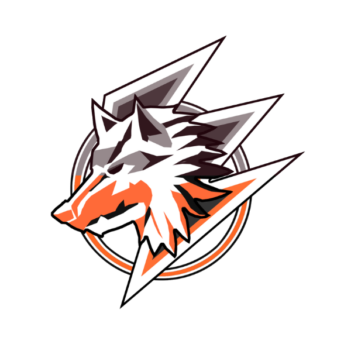

About Us

Bredin Champions
an organization that was started by five people on February 19, 2021, and established to the ground to grow a community. From its name, the organization focus to develop a friendly and non-toxic community for all people. The community is not much big as others but we are growing and spreading our roots for us to bloom in the world.